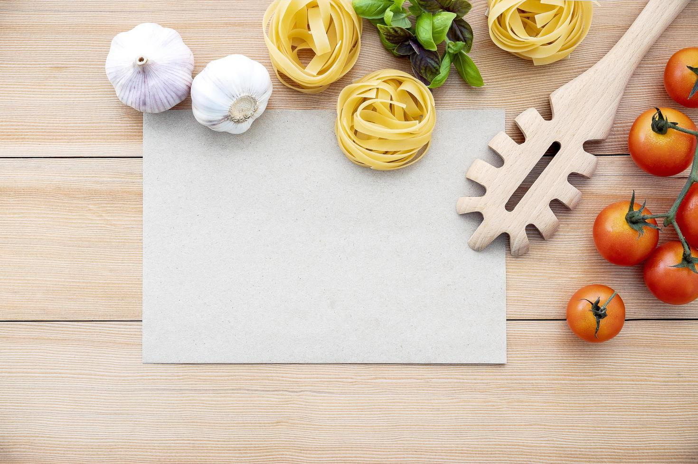
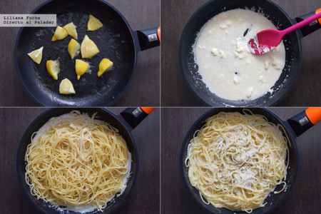

Ingredientes

- 1 unidad de cebolla blanca
- 1 diente de ajo
- Sal gusto de sal
- 1 unidad de huevo
- 1 unidad de huevo
- 1 unidad de tomate
- 1 hoja de laurel
- 300 gramos de pasta
- 1 lata de maíz tierno
- 1 unidad de pechuga de pollo
Pasos para crear tu receta

- Cocer la pasta en abundante agua.
- Añadir la hojita de laurel, el diente de ajo y la sal.
-
Cuando comience a hervir añadir la pasta y dejar de 7 a 10 minutos según
la marca.
-
Acompañamiento: En una sartén grande poner la cebolla cortada en dados a
sofreír a fuego lento.
- Añadir la pechuga de pollo cortado en dados pequeños.
-
Cuando el pollo ya está casi al punto, añadir la lata de maíz.
Salpimentar al gusto.
-
Cuando esté lista la pasta pasarla por un colador para quitar el agua y
añadir a la sartén para saltear un poco todo junto.
- Batir el huevo y añadir a la pasta removiendo hasta que cuaje.
- Servir.